Animaciones sobre Emociones en Scratch
Scratch es una herramienta visual diseñada para que niños y jóvenes
aprendan a programar de forma creativa. Fue elegida para este proyecto
porque permite expresar emociones, contar historias, crear animaciones
y desarrollar pensamiento lógico de manera sencilla e interactiva.
Las siguientes animaciones fueron creadas por los alumnos de la
Escuela Secundaria Técnica 33, Guanaceví Durango.
Cada una aborda una emoción, un conflicto o una situación común en la vida diaria,
ofreciendo mensajes positivos y estrategias de bienestar.
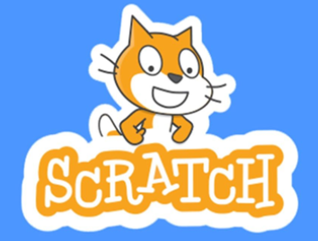
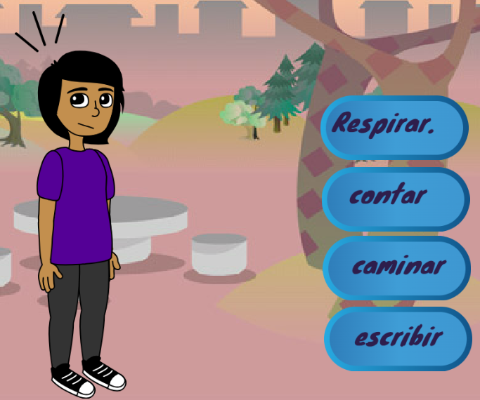
Cuidar mis emociones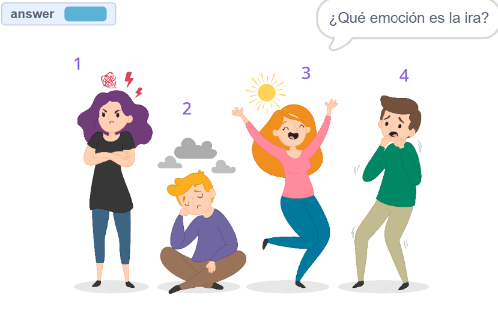
Preguntas para identificar emociones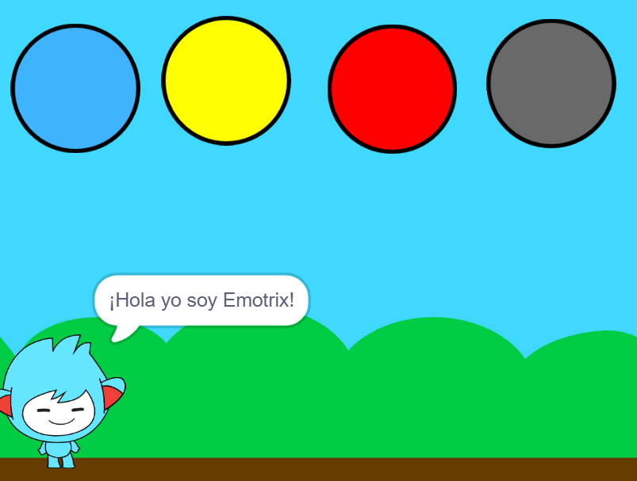
Relación de los colores con las emociones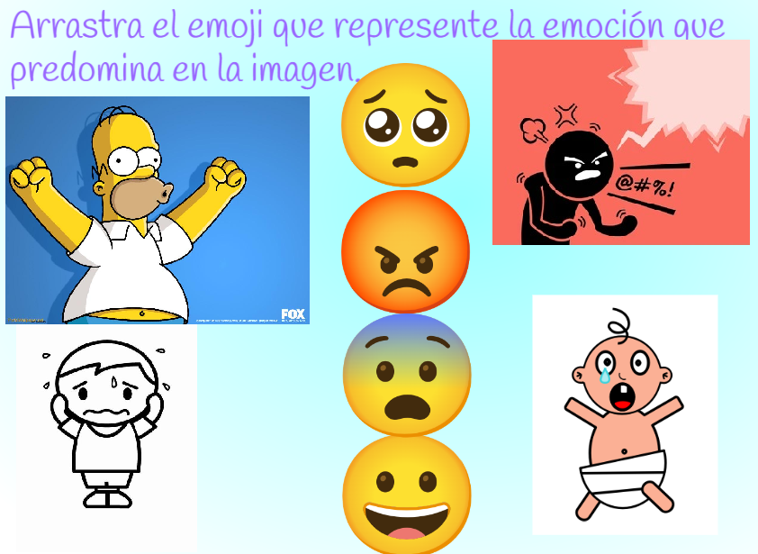
Relaciona las emociones con la imagen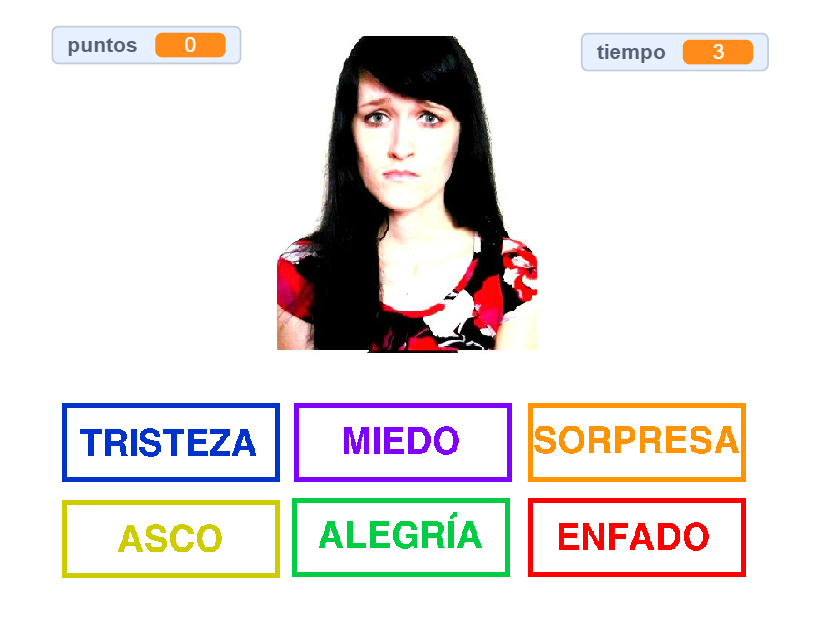
Juego de puntaje de identificacion de emociones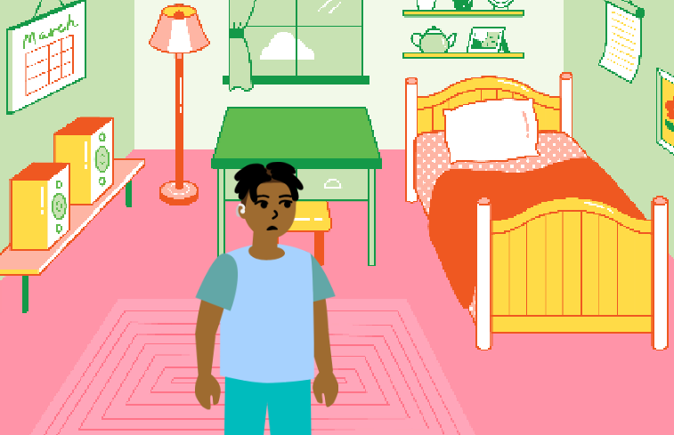
Cómo cambiar pensamientos negativos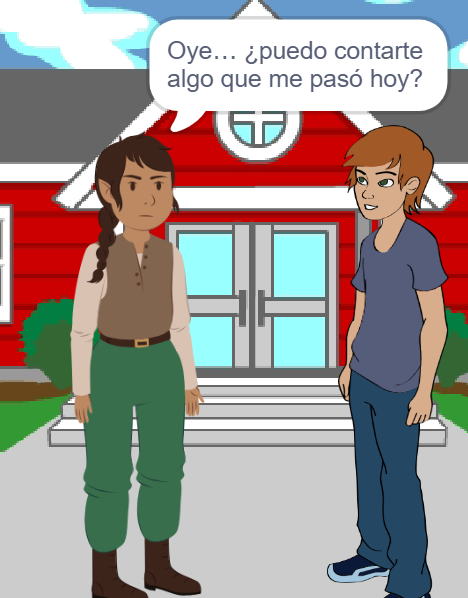
Escuchar a otros ayuda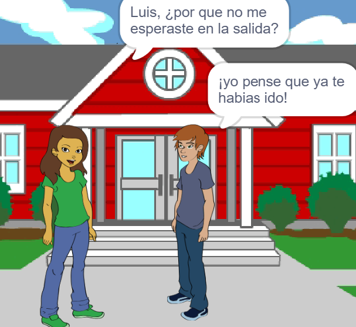
Hablar claro evita malos entendidos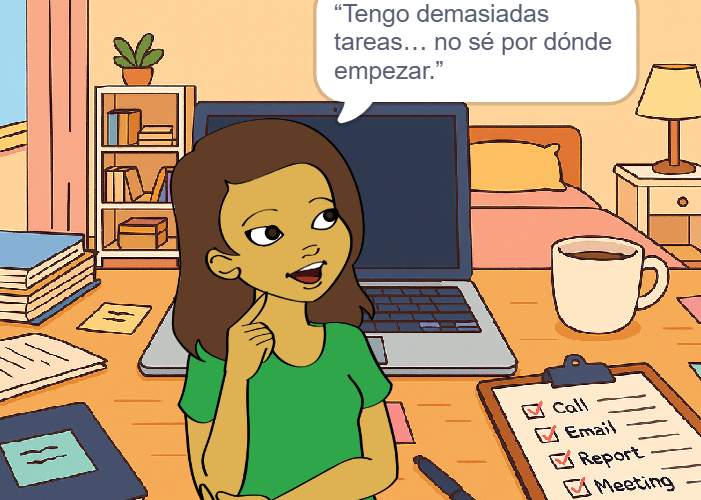
Manejar el estrés escolar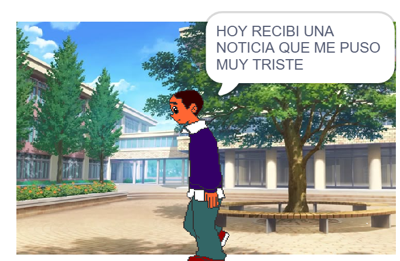
Animación sobre la tristeza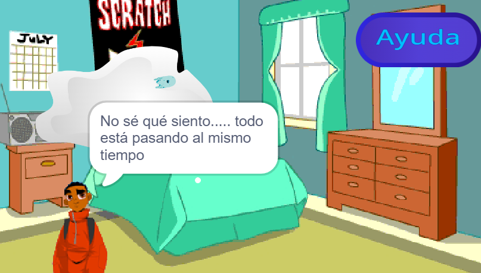
Crisis emocional y cómo pedir ayuda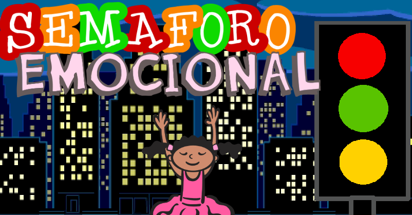
Controla tú semáforo interior